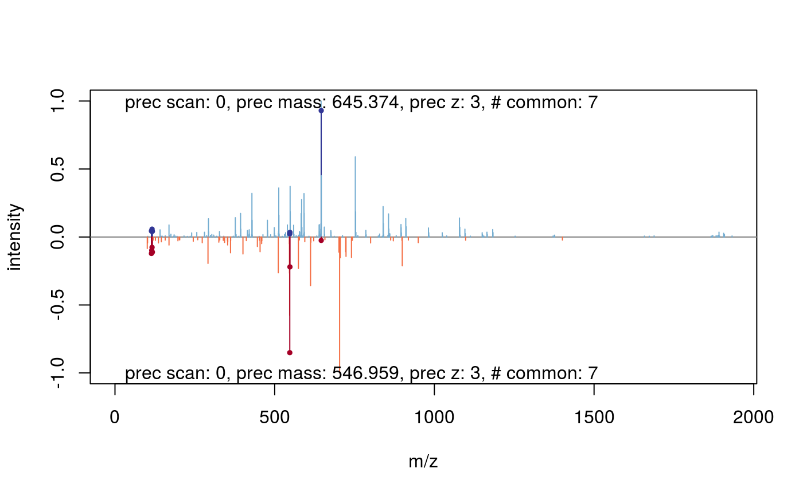
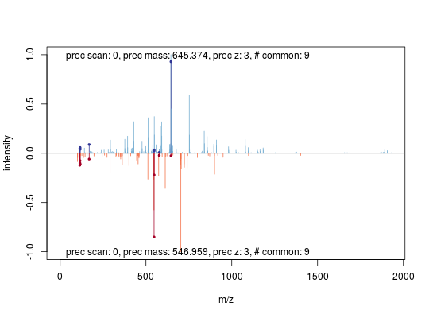
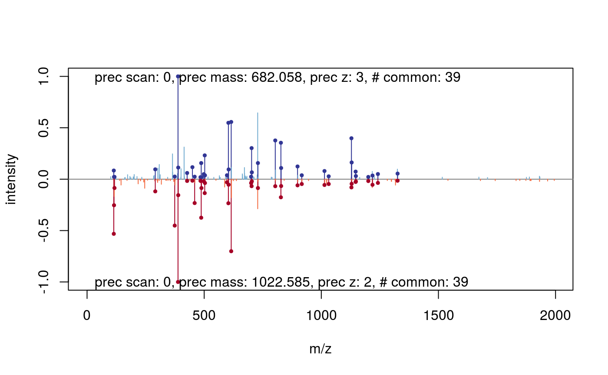

plotSpectrumSpectrum-methods.RdThese method plot mass spectra MZ values against the intensities as line plots. The first spectrum is plotted in the upper panel and the other in upside down in the lower panel. Common peaks are drawn in a slightly darker colour. If a peptide sequence is provided it automatically calculates and labels the fragments.
| x | Object of class |
|---|---|
| y | Object of class |
| … | Further arguments passed to internal functions. |
signature(x = "Spectrum", y = "Spectrum", …)Plots two spectra against each other. Common peaks are drawn in a slightly
darker colour.
The … arguments are passed to the internal functions.
Currently tolerance, relative, sequences and most of
the plot.default arguments (like xlim, ylim,
main, xlab, ylab, …) are supported.
You could change the tolerance (default 25e-6) and
decide whether this tolerance should be applied relative
(default relative = TRUE) or absolute (relative = FALSE)
to find and colour common peaks.
Use a character vector of length 2 to provide sequences
which would be used to calculate and draw the corresponding fragments.
If sequences are given the
type argument (default: type=c("b", "y") specify the
fragment types which should calculated. Also it is possible to allow some
modifications. Therefore you have to apply a named character
vector for modifications where the name corresponds to the
one-letter-code of the modified amino acid
(default: Carbamidomethyl modifications=c(C=57.02146)). Additional
you can specifiy the type of neutralLoss (default:
defaultNeutralLoss()).
See calculateFragments for details.
There are a lot of graphical arguments available to control the
representation of the peaks and fragments. Use peaks.pch to set the
character on top of the peaks (default: peaks.pch=19). In a similar
way you can set the line width peaks.lwd=1 and the magnification
peaks.cex=0.5 of the peaks. The size of the fragment/legend labels could
be set using fragments.cex=0.75 or legend.cex respectively.
See par for details about graphical parameters in general.
More spectrum plotting available in plot.Spectrum.
More details about fragment calculation: calculateFragments.
## find path to a mzXML file file <- dir(system.file(package = "MSnbase", dir = "extdata"), full.name = TRUE, pattern = "mzXML$") ## create basic MSnExp msexp <- readMSData(file, centroided.=FALSE) ## centroid them msexp <- pickPeaks(msexp) ## plot the first against the second spectrum plot(msexp[[1]], msexp[[2]])## add sequence information plot(msexp[[1]], msexp[[2]], sequences=c("VESITARHGEVLQLRPK", "IDGQWVTHQWLKK"))itraqdata2 <- pickPeaks(itraqdata) (k <- which(fData(itraqdata2)[, "PeptideSequence"] == "TAGIQIVADDLTVTNPK"))#> [1] 41 42#> X46 X47 #> 2046.175 2045.169